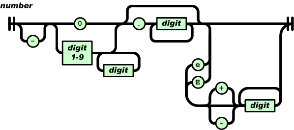
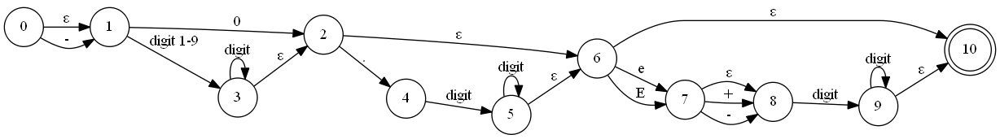
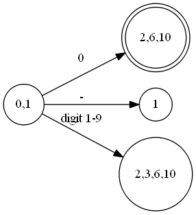
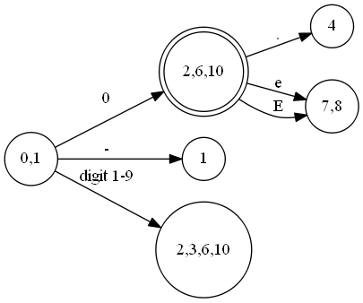
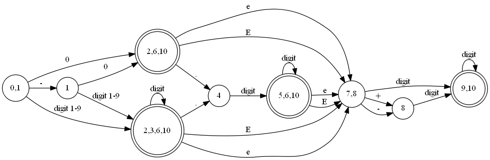
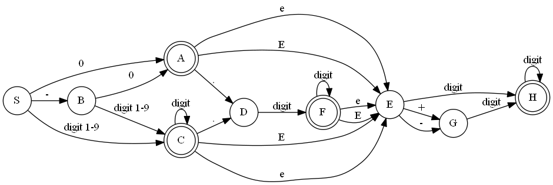

json的主页上，提供了number类型的符号识别过程，如下：

图片引用：http://www.json.org/json-zh.html
实际上这张图片表示的是一个状态机，只是状态没有标出来。因为这个状态机上存在ε转换，所以它是一个NFA（不确定有限自动机）。ε转换也即不需要输入串就能进行的转换，例如从开始状态到0之前的状态。而我们进行识别的时候，使用DFA（确定有穷自动机）会简单方便得多。所以首先应该将这个NFA转成DFA。
首先把这个NFA规范一下，写成状态与箭头的形式：

NFA转DFA最常用的方法是子集法，不过由于这个状态机的字符类型比较多，使用表格方式会使得表格很大并且很稀疏。这里用简便的记法，直接从左至右进行确定化：
考虑初始状态0，ε-closure(0)={0,1}，就直接简记为{0,1}状态，写出它相邻的状态，如果相邻状态包含ε，则做同样的处理：

然后再选定{2,6,10}，写出它的相邻状态：

用同样的方式，写出1、{2,3,6,10}的相邻状态，得到状态4和{7,8}，这里需要注意的是1跟{0,1}是两个不同的状态。并且{2,3,6,10}是包含{2,6,10}的，因此可以利用之前{2,6,10}的结果来简化运算，所以只需要考虑3的相邻状态，有点像动态规划思想。重复以上步骤，最终得到一个不含ε的DFA：

得到这个DFA之后并不一定是最简的，我们可以对它进行简化。首先为了方便，对它的状态都用字母替代吧：

简化的主要思路就是将状态的集合不断划分成子集。划分的办法是用一个集合相关的符号去测试这个集合中的状态，如果发现某个状态测试结果与其他状态不同，则划分状态，如果无法区分，则放到同一个集合中。
比如上述的DFA，首先可以肯定的是所有状态可以划分成“非终止状态”和“终止状态”两个集合，因为非终止状态总要转换到终止状态的。由于状态机是从左至右写出的，所以通常情况下，只需要考虑相邻的状态是否等价。并且，如果把这个状态机写成状态转换表，表项是很稀疏的，所以实际上可以合并的状态很少。具体过程如下：
对于终结符{A,C,F,G}每两个都互不等价，因此划分成四个状态{A},{C},{F},{G}
对于非终结符{S,B,D,E,G}，E和G不等价，原因在于E对于+/-结果为G，而G不能通过+/-，并且E,G可以通过digit转换到H，而其他都不能这样转换，所以原集合可以划分成{S,B,D},{E},{G}
{S,B}和{D}很明显是不等价的，而对于S和B，唯一的区别就是S能够通过-转换到B，而B不能通过-
任何状态都不能合并，所以上述的状态机已经不能再简化。
正规式把上面的状态机写出来就是（非通常的正则表达式语法）：
1
2
3
4
|
A=0|-0
C=([1-9]|-[1-9])d*
F=(A|C).dd*
H=(A|C|F)(e|E)(d|(+|-)d)d*
|
有了以上的状态机，我们就可以实现一个number识别程序了：
1
2
3
4
5
6
7
8
9
10
11
12
13
14
15
16
17
18
19
20
21
22
23
24
25
26
27
28
29
30
31
32
33
34
35
36
37
38
39
40
41
42
43
44
45
46
47
48
49
50
51
52
53
54
55
56
57
58
59
60
61
62
63
64
65
66
67
68
69
70
71
72
73
74
75
76
77
78
79
80
81
82
83
84
85
86
87
88
89
90
91
92
93
94
|
#include <assert.h>
#include <ctype.h>
#include <iostream>
enum STATE{ S, A, B, C, D, E, F, G, H };
const char* RecognizeNumber(const char* str, STATE* last_state)
{
STATE state = S;
*last_state = S;
const char *p = str;
for (; *p != '\0'; p++){
const char& ch = *p;
switch (state){
case S:
if (ch == '0') state = A;
else if (ch == '-') state = B;
else if (ch >= '1' && ch <= '9')state = C;
else return p;
break;
case A:
if (ch == 'e' || ch == 'E') state = E;
else if (ch == '.') state = D;
else return p;
break;
case B:
if (ch == '0') state = A;
else if (ch >= '1' && ch <= '9') state = C;
else return p;
break;
case C:
if (isdigit(ch)) state = C;
else if (ch == '.') state = D;
else if (ch == 'e' || ch == 'E') state = E;
else return p;
break;
case D:
if (isdigit(ch)) state = F;
else return p;
break;
case E:
if (isdigit(ch)) state = H;
else if (ch == '+' || ch == '-') state = G;
else return p;
break;
case F:
if (isdigit(ch)) state = F;
else if (ch == 'e' || ch == 'E') state = E;
else return p;
break;
case G:
if (isdigit(ch)) state = H;
else return p;
break;
case H:
if (isdigit(ch)) state = H;
else return p;
break;
default:
assert(true);
}
*last_state = state;
}
return p;
}
void Recognize(const char* s)
{
STATE state;
const char* endp = RecognizeNumber(s, &state);
bool onterminal = (state == A || state == C || state == F || state == H);
std::cout << s << (*endp == '\0' && onterminal ? "\tYes" : "\tNo") << std::endl;
}
int main()
{
Recognize("0");
Recognize("-1");
Recognize("23");
Recognize("-3.4");
Recognize("5e6");
Recognize("5.3E+7");
Recognize("-");
Recognize("-0.4e");
Recognize("-0.");
Recognize("3.6a");
Recognize("-3.6ea");
Recognize("053ab4");
Recognize("01");
Recognize("00.01");
return 0;
}
|